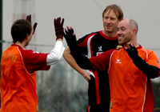
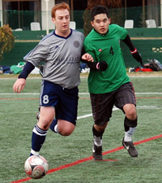
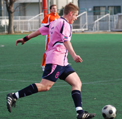
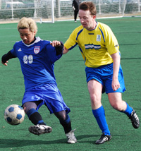

Sala Win in League and Cup with Six For and Dan Against.
Hachioji Park, Saturday 27th February.
We love 2010! Just like a cute Japanese t-shirt this is how the resurgent Sala feel. Continuing their current good form, Sala cruised past Saitama Jets 3-0 in the league, then bossed the Celts 3-1 in the cup, picking up deserved victories in both games. Jets were technical and fast without much threat and Celts were skillful, direct and physical without much speed. more
ST
Panther’s Penalty ‘Steals’ the Points.
Hachioji Park, Sunday 28th February.
As the only team to put a dent in the Panther’s otherwise flawless championship campaign (a 1-1 draw back in October). The Panthers v Vagabonds rematch was always going to be a highly anticipated fixture. more
TS
Celts Maul Weakened Lions.
Fukuda Denshi, Saturday 27th February.
Three straight losses going into this game meant that a very determined Celts squad assembeld in Soga on Saturday night. Two narrow loses to YCAC and BFC added to a heavy, heavy loss to Hibs left the Celts wondering what they had done to upset the footballing gods. Celts also felt hard done by the 1-1 result earlier on in the season between these two teams. more
PM
|  |
|
Ben Steinson celebrates scoring the first goal for King George as they beat Pumas 3-0
|
Pumas Hung Out to Dry After Royal Downpour
YC&AC, Sunday 28th February.
I love rain, early mornings and epic journeys to far away lands, so another round of TML fixtures was just the ticket. This time the venue was Yamate’s very own YC&AC. The fixture: Pumas vs. King George FC. The last meeting was decided by a late goal scored by the league’s Gubernatorial Grand Marshal and international ‘Tall Guy’ Sid Lloyd in a 2-1 win for the Pumas. KGFC were out for revenge and the all important 3 points it comes with; revenge is a dish best served cold, so the heavy rain and Arctic winds were fitting conditions. more
BS
Subarashi Sho Steals the Spoils.
Fukuda Denshi, Sunday 28th February.
After the 12 goal thriller last time (in which BFC secured the spoils) it was anyone's guess what the result of this game would be following a mixed start to 2010 for both teams. As it was, a devastating display of trickery in the counter attack from BFC's Shosuke was the main difference between the sides, though over the course of 80 minutes the difference was small. more
 |
|
Young mikey Taw continues his goalscoring run as YCAC defeat Geckoes 3-0
|
Slick YCAC Glide Past Geckoes
YC&AC, Sunday 28th February.
On a cold, wet, Sunday morning YC&AC managed to keep their unbeaten run going as they comfortably beat a tough and well organized Geckoes team.
In conditions that were far from ideal for playing great football, both teams tried their best to get the ball down & play. After a slightly nervy start, YC&AC were rewarded for some slick build up play when Mikey Taw neatly slotted home to put the league champs in front. more
RP
Panthers Complete Diego Double.
Hanno, Saturday 20th February.
It took half of the Panthers team 40 minutes to get from Shibuya to Yoyogi in 'The Machine's', red machine on Saturday evening, and it was looking somewhat girigiri as to whether we would have a team on the pitch (which was another 60km away) by kick off. more
BC
Jimmy Burns Barbs
Fukuda Denshi, Sunday 21st February.
This was a six-pointer. Embassy’s slide in recent weeks, culminating in a 4-0 drubbing at YCAC last time out, had the alarm bells ringing. A meeting with an improving Barbarians, who had beaten us last month, was a massive test of character, and thankfully a test that was passed….just! more
RH
William Wallace Would Have Been Proud of the Lion Hearts
YC&AC, Sunday 21st February.
On a beautiful Sunday morning, a weak Lions squad were defiant not to be defeated again by the YC&AC after a very entertaining game at the start of the season. more
MS
Whinging Sala Grind to a Halt…
Shimo Takaido, Sunday 21st February.
Alas.Sala. Bon sport, trop snob. Enough word games. (If yr in a hurry skip the first three paragraphs here.) FC International 3, Sala nil. (Transition word.) This is tough to write. What with Roddy Charles' legacy of stellar match reporting, and Scott T's fine writing form it's intimidating more
TM
FC battle to 3 points against Celts
ASIJ, Sunday 21st February.
BFC started the day with 14 men, by kick off they had 10. Doyle, Day, Denham and Ring lost to the a ticker tummy, work, amnesia and drink - the gaffer is not happy. 4-4-1 it is then. more ...
JM
Stoneds Blown Up by 180kg TNT Compound.
Hanno, Saturday 20th February.
A highly charged encounter between Jets 2nds and Stoneds, saw the Jets triumph 1-0 thanks to a deadly blast of Tomo ‘n’ Turner mid-way through the 2nd half . On a cold night in Hanno, the Jets took a giant stride in their promotion push to TML2 by doing the double over Stoneds and making it 3 wins in a row. more
JR
Hibs Held back by Solid Inter Squad
Hachioji Park, Sunday 14th February.
Well, that sucked. We knew FC International would be tough and they came out on all cylinders, harassing us all over the pitch. Neither side had any clear-cut chances, but they won a few corners, and a great header near post off one put them up 1-0. We slowly got ourselves back in the game, but couldn't finish, and that's how the first half ended. more ...
JA
Sala Start Slow, Then Swin.. Things their Way.
Fukuda Denshi, Sunday 14th February.
What do Soga on a Sunday night and Paris Hilton have in common? It’s a slot nobody wants.
I guess the reason for the resistance is…well…homework? Do it earlier. Need to prepare for work the next day? Prepare earlier. Want to relax and put feet up on a cold Sunday evening? more
GL
Lancaster, Jets Repel Sun
Hachioji Park, Saturday 13th February.
It certainly was a funny old game. Jets 2nds dominated the first half, with Gildart and Shikama buzzing, only for a sharp counter from Sun to put them 1 up. Chances were made and missed, until Piper's block-tackle fell to Garner just outside the box. He promptly thumped it into the top corner off the underside of the bar, to draw the Jets level at half-time. more ...
GG
|  |
|
'Ginger' Anthony Savages battles for the ball as YCAC overcome Zion 4-2.
|
YCAC Scramble Up as Hibs Stumble
YC&AC, Sunday 7th February.
Another glorious sunny day at YC&AC and Three more points for the Silver Machine - although they were pushed all the way by a plucky Zion side.
After a rather dull start to the game, things livened up when Hide Yoshioka was put clean through on the left hand side, cut in towards goal & finished exquisitely, drilling his shot in to the bottom right corner. more
RP
Shane FC Crowned Kings of Omiya in Derby Day Doubles Act
Horisaki Koen, Sunday 7th February.
The division 3 Omiya derby always seems to provide an exciting encounter and this Sunday`s match was to prove no exception to the rule. On a freezing cold,and windy evening Shane FC and King George FC met with both teams looking to claim maximum points from the encounter in order to close the gap on Division leaders Jets 2nds. more ...
MG
 |
|
Tom Sheard cuts his way through the Yabe Midfield on another of his runs.
|
Pumas Battle Yabe to Scoreless Draw in Closely Contested Union Match
Oi Futo Dirty, Sunday 7th February.
As an American soccer/football player, you appreciate and try to emulate the tough and tested British style of play. After playing in Japan, you quickly realize the pace and finesse in the Japanese style. In Division 3 of the TML, all style gets thrown out the window, and you end up with a game that more resembles fugby - something in between football and rugby. more
ST
Hatrick of Hatricks as Panthers Hit 10
|  |
|
Ben Cordier about to pull the trigger, He scored one of three hat-tricks!
|
Hachioji Park, Saturday 6th February.
There aren't many games that serve up 3 hatricks and all from the same side, but that was the treat in store for the galleries massing around the pitch at Hachioji Park. The “galleries”, otherwise known as, Romen's mate from England, was press ganged into the photographer role and he had plenty of action to keep him busy – thirteen goals in a feast of attacking football. more ...
AV
BFC Move to 3rd with Comfortable Win Over Angry Lions.
Hachioji Park, Saturday 6th February.
With the first half almost ending in farce and the second half ending more like a training match this was never a game for the purists. The 4-0 scoreline probably does do justice to BFC's dominance of the game but in fairness to Lions they battled well in defence and kept trying to take the game to BFC even when a few goals behind. more ...
JM
|  |
|
Geckoes Captain Simon Bromwell Leads his team to another Victory.
|
Geckoes Top Jets at Hachioji
Hachioji Park, Saturday 6th February.
The Geckoes had a good team out versus the Jets on a chilly Saturday at Hachioji Park. One of the rare Saturday and afternoon games we've had this year. Was a bit nervy as the ref was not there and we'd be warned by the league to make sure to start the games right on time, nearly had to pick a player from one of the teams do the honors, but Orlando turned up and were kicking off soon after that. more
PZ
Thierry Henry Strikes Again / The Hand of Jon
Hachioji Park, Saturday 6th February.
On a freezing night in Hachioji Park, Lions were looking to continue their good run of 3 wins against a strong BFC side, and although Lions were as usual missing crucial players, the game started well with Lions absorbing BFC attacks, until a cross that just slipped through Orlando’s hand, fell beyond the BFC striker who pushed the ball into the net with his hands. more
HS
|